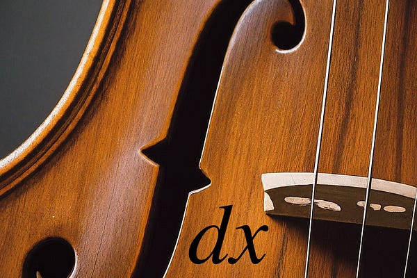

A log of my thoughts, solutions, and approaches to some puzzles I've soled from Jane Street.

A place to dump some of my work on weekly problems given out by a math blog called Fiddler on the Proof.